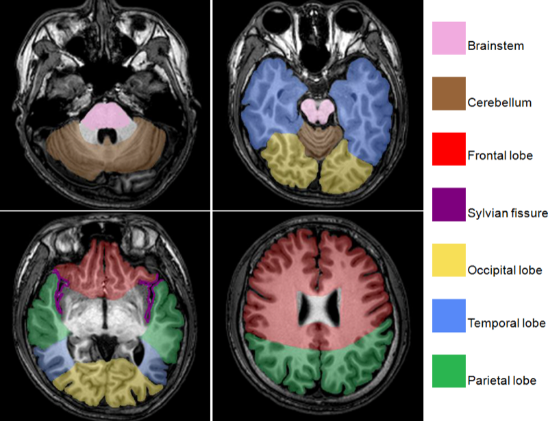
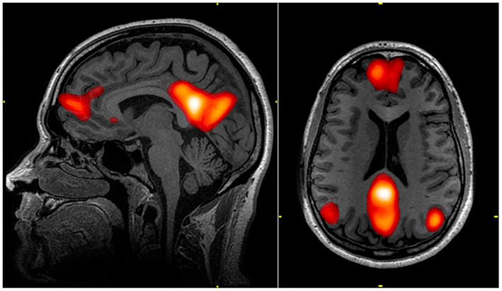
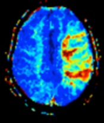
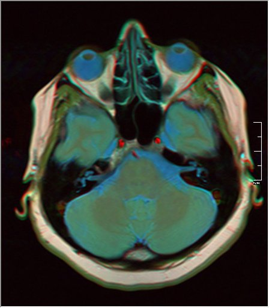
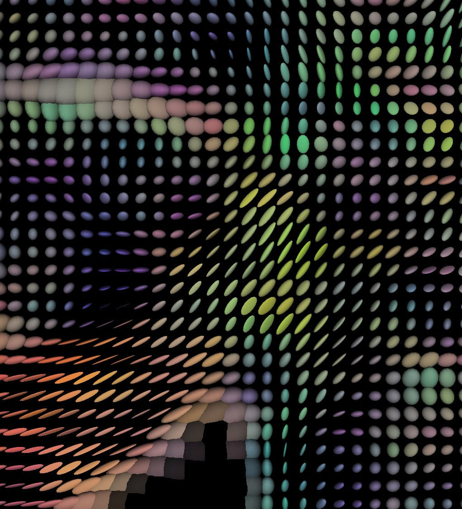
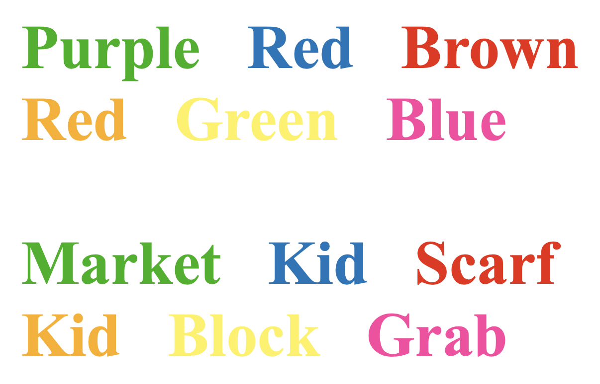

How we study the brain.
A portfolio of advanced neuroimaging, intervention, and assessment methods — selected and combined to answer specific questions about traumatic brain injury and recovery.
Neuroimaging Methods

Structural MRI (T1 / T2 / FLAIR)
High-resolution anatomical imaging forms the foundation of every study in the lab. T1-weighted scans give us crisp tissue contrast for cortical and subcortical segmentation; T2 and FLAIR sequences reveal edema, gliosis, and white-matter lesions that mark the long-term consequences of injury. Every multi-modal protocol begins here.

Resting-State Functional MRI
By measuring spontaneous fluctuations in the BOLD signal while the participant lies still, we map intrinsic networks like the default-mode and salience networks. In TBI, these networks fragment — and tracking their reorganization over time gives us a window into the brain's recovery from injury without requiring patients to perform difficult tasks.

Arterial Spin Labeling (ASL) Perfusion MRI
ASL uses magnetically tagged blood water as an endogenous tracer to measure cerebral blood flow — no contrast injection required. We use ASL to track regional perfusion changes after TBI, identifying distinct clusters of hypo- and hyperperfusion that correlate with cognitive recovery. It's one of the cleanest non-invasive readouts of brain physiology we have.

Cerebrovascular Reactivity (CVR) Mapping
CVR mapping captures how much cerebral blood vessels can dilate in response to a vasoactive stimulus (typically CO₂ or a breath hold), measured voxel-by-voxel across the brain. We use resting-state-based CVR — which avoids the gas-delivery hardware of traditional methods — to detect microvascular damage that conventional MRI misses entirely.

Diffusion Tensor Imaging (DTI)
DTI measures the directional diffusion of water molecules along axonal bundles, allowing us to reconstruct the brain's white-matter highways. We combine tractography with connectomic analysis to map the structural network and quantify the diffuse axonal injury that defines moderate-to-severe TBI — work we've published in Hum Brain Mapp, JINS, and J Neurotrauma.
Intervention

Transcranial Photobiomodulation (tPBM)
tPBM delivers near-infrared light (typically 800–1100 nm) across the forehead, where photons penetrate the skull and interact with mitochondrial cytochrome-c oxidase in cortical neurons — increasing cerebral blood flow and metabolic activity. Our DOD-funded Phase II trial is the first rigorous test of tPBM in older adults with chronic TBI.
Cognitive & Behavioral Assessment

Standardized Neuropsychological Testing
Imaging tells us about the brain's structure and function; neuropsychological testing tells us how the person is doing. Our protocols cover executive function, memory, attention, processing speed, and emotional regulation — the cognitive domains most affected by TBI. We use these batteries to track recovery, validate imaging biomarkers, and measure treatment response.